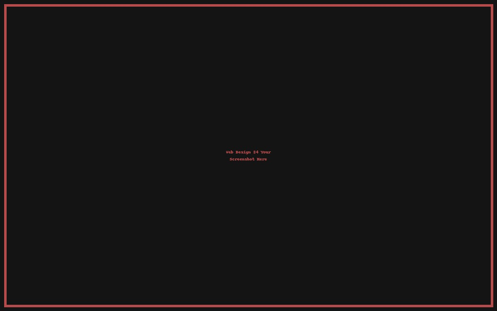

About Me
Designer & builder focused on clean visuals and performance.
My Approach
I mix strong typography with bold contrast. Every design serves a purpose: clarity first, then flair.
What I Work With
- HTML, CSS, JavaScript
- Responsive, mobile‑first design
- Branding & thumbnail strategy
